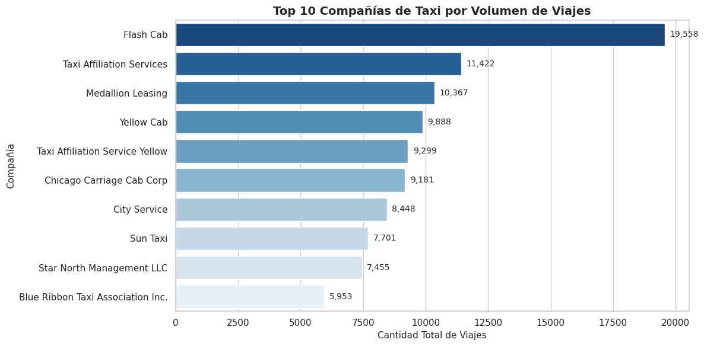
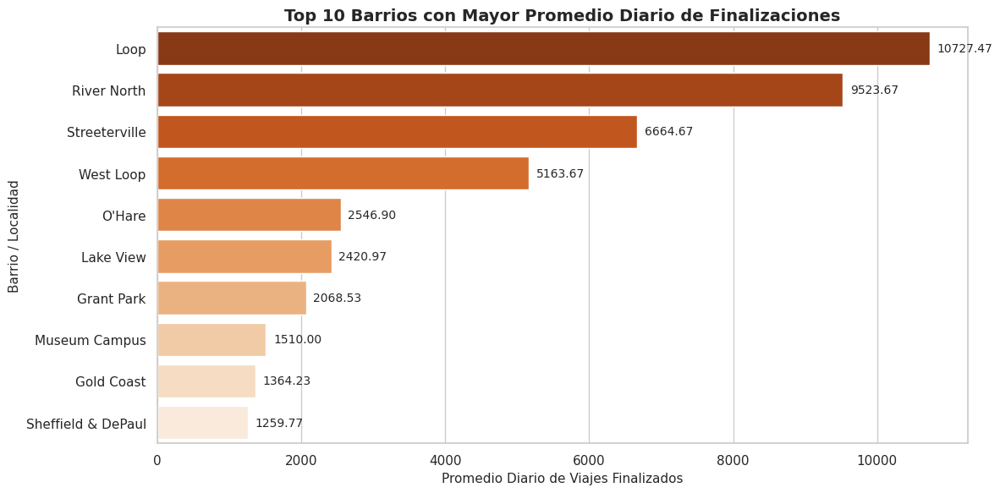

Zuber es una nueva empresa de viajes compartidos que se está lanzando en Chicago. Como analistas de datos, el objetivo es identificar patrones en la información operativa de la competencia y evaluar el impacto de variables externas (como las condiciones climáticas) en la duración y demanda de los viajes.
El proyecto consta de dos fases principales: * Análisis Exploratorio de Datos (EDA): Identificación de las principales compañías de taxi y los destinos con mayor volumen de finalización de viajes. * Prueba de Hipótesis Estadística: Evaluación del impacto del clima lluvioso en la duración de los viajes de la ruta Loop hacia el Aeropuerto Internacional O’Hare los días sábado.
2. Paso 4: Análisis Exploratorio de Datos (EDA)
2.1 Carga e Inspección de Datos
Importamos las librerías necesarias y cargamos los archivos CSV estructurados.
🔍 Ver código Python
import pandas as pdimport matplotlib.pyplot as pltimport seaborn as snsfrom scipy import stats# Configuración visual de los gráficossns.set_theme(style="whitegrid")plt.rcParams['figure.figsize'] = (12, 6)# Carga de datasetstry: df_companies = pd.read_csv('/datasets/project_sql_result_01.csv') df_dropoffs = pd.read_csv('/datasets/project_sql_result_04.csv')exceptFileNotFoundError: df_companies = pd.read_csv('project_sql_result_01.csv') df_dropoffs = pd.read_csv('project_sql_result_04.csv')
2.2 Auditoría de Calidad e Integridad de Datos
🔍 Ver código Python
# Estructura general de los DataFramesprint("--- Información de Empresas de Taxis ---")df_companies.info()print("\n--- Información de Barrios de Destino ---")df_dropoffs.info()# Verificación de datos duplicadosprint(f"\nDuplicados en df_companies: {df_companies.duplicated().sum()}")print(f"Duplicados en df_dropoffs: {df_dropoffs.duplicated().sum()}")# Confirmación de tipos de datos#df_companies['trips_amount'] = df_companies['trips_amount'].astype(int)#df_dropoffs['average_trips'] = df_dropoffs['average_trips'].astype(float)# Mostrar primeros registrosdisplay(df_companies.head())display(df_dropoffs.head())# Verificación explícita de nulosprint("Nulos en df_companies:")print(df_companies.isna().sum())print("\nNulos en df_dropoffs:")print(df_dropoffs.isna().sum())
--- Información de Empresas de Taxis ---
<class 'pandas.core.frame.DataFrame'>
RangeIndex: 64 entries, 0 to 63
Data columns (total 2 columns):
# Column Non-Null Count Dtype
--- ------ -------------- -----
0 company_name 64 non-null object
1 trips_amount 64 non-null int64
dtypes: int64(1), object(1)
memory usage: 1.1+ KB
--- Información de Barrios de Destino ---
<class 'pandas.core.frame.DataFrame'>
RangeIndex: 94 entries, 0 to 93
Data columns (total 2 columns):
# Column Non-Null Count Dtype
--- ------ -------------- -----
0 dropoff_location_name 94 non-null object
1 average_trips 94 non-null float64
dtypes: float64(1), object(1)
memory usage: 1.6+ KB
Duplicados en df_companies: 0
Duplicados en df_dropoffs: 0
company_name
trips_amount
0
Flash Cab
19558
1
Taxi Affiliation Services
11422
2
Medallion Leasing
10367
3
Yellow Cab
9888
4
Taxi Affiliation Service Yellow
9299
dropoff_location_name
average_trips
0
Loop
10727.466667
1
River North
9523.666667
2
Streeterville
6664.666667
3
West Loop
5163.666667
4
O'Hare
2546.900000
Nulos en df_companies:
company_name 0
trips_amount 0
dtype: int64
Nulos en df_dropoffs:
dropoff_location_name 0
average_trips 0
dtype: int64
Diagnóstico de los datos:
df_companies: 64 filas sin registros nulos ni duplicados. La columna trips_amount almacena la cantidad de viajes como entero.
df_dropoffs: 94 barrios registrados sin valores ausentes. La columna average_trips almacena el promedio diario en formato decimal.
2.3 Ranking: Top 10 Barrios por Finalización de Recorridos
🔍 Ver código Python
# Filtrado de los 10 principales destinos por promedio de viajestop_10_dropoffs = df_dropoffs.sort_values(by='average_trips', ascending=False).head(10)display(top_10_dropoffs)
dropoff_location_name
average_trips
0
Loop
10727.466667
1
River North
9523.666667
2
Streeterville
6664.666667
3
West Loop
5163.666667
4
O'Hare
2546.900000
5
Lake View
2420.966667
6
Grant Park
2068.533333
7
Museum Campus
1510.000000
8
Gold Coast
1364.233333
9
Sheffield & DePaul
1259.766667
2.4 Visualización y Análisis de Patrones
Gráfico 1: Top 10 Compañías de Taxi por Volumen de Viajes (15 y 16 de noviembre de 2017)
🔍 Ver código Python
top_10_companies = df_companies.sort_values(by='trips_amount', ascending=False).head(10)plt.figure(figsize=(12, 6))ax = sns.barplot( data=top_10_companies, x='trips_amount', y='company_name', palette='Blues_r')plt.title('Top 10 Compañías de Taxi por Volumen de Viajes', fontsize=14, fontweight='bold')plt.xlabel('Cantidad Total de Viajes', fontsize=11)plt.ylabel('Compañía', fontsize=11)# Inserción de etiquetas directas sobre las barrasfor p in ax.patches: width = p.get_width() ax.annotate(f'{int(width):,}', (width +200, p.get_y() + p.get_height() /2.), ha='left', va='center', fontsize=10)plt.tight_layout()plt.show()

Conclusiones del Gráfico 1: * Liderazgo de mercado: Flash Cab lidera de manera clara la industria con 19,558 viajes, superando ampliamente a los demás competidores durante el periodo analizado. * Competencia secundaria: Taxi Affiliation Services (11,422 viajes) y Medallion Leased (10,331 viajes) ocupan el segundo y tercer lugar, manteniendo niveles de demanda similares entre sí. * Implicación comercial: La concentración del volumen en Flash Cab indica que Zuber debe desarrollar estrategias competitivas para atraer tanto a conductores como a usuarios en horas de mayor demanda.
Gráfico 2: Top 10 Barrios de Chicago por Promedio de Finalización de Viajes
🔍 Ver código Python
plt.figure(figsize=(12, 6))ax = sns.barplot( data=top_10_dropoffs, x='average_trips', y='dropoff_location_name', palette='Oranges_r')plt.title('Top 10 Barrios con Mayor Promedio Diario de Finalizaciones', fontsize=14, fontweight='bold')plt.xlabel('Promedio Diario de Viajes Finalizados', fontsize=11)plt.ylabel('Barrio / Localidad', fontsize=11)# Inserción de etiquetas directas sobre las barrasfor p in ax.patches: width = p.get_width() ax.annotate(f'{width:.2f}', (width +100, p.get_y() + p.get_height() /2.), ha='left', va='center', fontsize=10)plt.tight_layout()plt.show()

Conclusiones del Gráfico 2: * Concentración geográfica: Loop (10,727.47 viajes) y River North (9,523.67 viajes) son los principales centros de destino en Chicago, concentrando la mayor actividad económica y turística de la ciudad. * Ruta de transporte clave: El Aeropuerto O’Hare se sitúa en la quinta posición con 2,546.90 finalizaciones diarias. Representa un segmento clave debido a la mayor duración y rentabilidad por viaje.
3. Paso 5: Prueba de Hipótesis Estadística
Evaluamos si la duración promedio de los viajes en la ruta Loop -> Aeropuerto Internacional O’Hare cambia en los sábados lluviosos.
3.1 Planteamiento del Marco Experimental
Hipótesis Nula (H0): La duración promedio de los viajes desde el Loop hasta el Aeropuerto Internacional O’Hare es la misma en sábados lluviosos y no lluviosos.
Hipótesis Alternativa (H1): La duración promedio de los viajes desde el Loop hasta el Aeropuerto Internacional O’Hare cambia en sábados lluviosos.
Nivel de significación (alpha): 0.05 (5%).
Criterio de prueba: Prueba t de Student para dos muestras independientes (scipy.stats.ttest_ind). Justificación: Se comparan las medias de una variable continua (duration_seconds) proveniente de dos grupos independientes y excluyentes (sábados con clima Good vs. sábados con clima Bad).
3.2 Carga de Datos y Ejecución de la Prueba
🔍 Ver código Python
import pandas as pdfrom scipy import stats# ---------------------------------------------------------# Step 1: Carga y Exploración Inicial del Dataset de Viajes# ---------------------------------------------------------try: df_trips = pd.read_csv('/datasets/project_sql_result_07.csv')exceptFileNotFoundError: df_trips = pd.read_csv('project_sql_result_07.csv')print("--- Primeros 5 registros ---")display(df_trips.head())print("\n--- Información del Dataset ---")df_trips.info()print("\n--- Conteo de Valores Nulos ---")print(df_trips.isna().sum())print(f"\n--- Filas duplicadas iniciales: {df_trips.duplicated().sum()} ---")# Eliminación de duplicados para evitar sobreestimar el tamaño muestraldf_trips = df_trips.drop_duplicates().reset_index(drop=True)print(f"--- Filas duplicadas tras limpieza: {df_trips.duplicated().sum()} ---")# ---------------------------------------------------------# Step 2: Conversión y Validación de Fechas# ---------------------------------------------------------df_trips['start_ts'] = pd.to_datetime(df_trips['start_ts'])# Confirmar que todos los registros correspondan a sábado (dayofweek == 5)dias_semana = df_trips['start_ts'].dt.day_name().unique()print(f"\nDías de la semana presentes en los datos: {dias_semana}")# ---------------------------------------------------------# Step 3: Detección y Tratamiento de Duraciones Iguales a 0# ---------------------------------------------------------trips_cero = (df_trips['duration_seconds'] ==0).sum()print(f"\nNúmero de viajes con duration_seconds = 0: {trips_cero}")# Justificación: Los viajes con duración 0 son registros anómalos/cancelados.# Se filtran para no sesgar el cálculo de los tiempos promedio.df_trips_clean = df_trips[df_trips['duration_seconds'] >0].copy()# ---------------------------------------------------------# Step 4: Formación de Muestras e Inspección de Varianza (Levene)# ---------------------------------------------------------good_weather = df_trips_clean[df_trips_clean['weather_conditions'] =='Good']['duration_seconds']bad_weather = df_trips_clean[df_trips_clean['weather_conditions'] =='Bad']['duration_seconds']# Prueba de Levene para verificar homogeneidad de varianzasstat_levene, p_value_levene = stats.levene(good_weather, bad_weather)print(f"\nPrueba de Levene: p-value = {p_value_levene:.4e}")# Justificación e interpretación de Levenealpha =0.05if p_value_levene < alpha: equal_variances =Falseprint("Interpretación Levene: Se rechaza la H0 de varianzas iguales (p < 0.05). Se usará equal_var=False en el t-test.")else: equal_variances =Trueprint("Interpretación Levene: No se rechaza la H0 de varianzas iguales. Se usará equal_var=True en el t-test.")# ---------------------------------------------------------# Step 5: Ejecución del Test t de Student# ---------------------------------------------------------results = stats.ttest_ind(good_weather, bad_weather, equal_var=equal_variances)print("\n"+"="*50)print("RESULTADOS DE LA PRUEBA T DE STUDENT")print("="*50)print(f"Muestra buen clima (Good): {len(good_weather)} viajes | Promedio: {good_weather.mean()/60:.2f} min")print(f"Muestra mal clima (Bad): {len(bad_weather)} viajes | Promedio: {bad_weather.mean()/60:.2f} min")print(f"Diferencia en minutos: {(bad_weather.mean() - good_weather.mean())/60:.2f} min")print(f"Estadístico t: {results.statistic:.4f}")print(f"Valor p (p-value): {results.pvalue:.4e}")print("="*50)if results.pvalue < alpha:print("Resultado: Se rechaza la hipótesis nula (H0).")print("Conclusión: Existe una diferencia estadísticamente significativa en la duración promedio de los viajes entre sábados lluviosos y no lluviosos.")else:print("Resultado: No se rechaza la hipótesis nula (H0).")print("Conclusión: No hay suficiente evidencia estadística para afirmar un cambio en la duración promedio del viaje.")
--- Primeros 5 registros ---
start_ts
weather_conditions
duration_seconds
0
2017-11-25 16:00:00
Good
2410.0
1
2017-11-25 14:00:00
Good
1920.0
2
2017-11-25 12:00:00
Good
1543.0
3
2017-11-04 10:00:00
Good
2512.0
4
2017-11-11 07:00:00
Good
1440.0
--- Información del Dataset ---
<class 'pandas.core.frame.DataFrame'>
RangeIndex: 1068 entries, 0 to 1067
Data columns (total 3 columns):
# Column Non-Null Count Dtype
--- ------ -------------- -----
0 start_ts 1068 non-null object
1 weather_conditions 1068 non-null object
2 duration_seconds 1068 non-null float64
dtypes: float64(1), object(2)
memory usage: 25.2+ KB
--- Conteo de Valores Nulos ---
start_ts 0
weather_conditions 0
duration_seconds 0
dtype: int64
--- Filas duplicadas iniciales: 197 ---
--- Filas duplicadas tras limpieza: 0 ---
Días de la semana presentes en los datos: ['Saturday']
Número de viajes con duration_seconds = 0: 6
Prueba de Levene: p-value = 8.1952e-01
Interpretación Levene: No se rechaza la H0 de varianzas iguales. Se usará equal_var=True en el t-test.
==================================================
RESULTADOS DE LA PRUEBA T DE STUDENT
==================================================
Muestra buen clima (Good): 717 viajes | Promedio: 34.15 min
Muestra mal clima (Bad): 148 viajes | Promedio: 40.15 min
Diferencia en minutos: 6.00 min
Estadístico t: -5.2915
Valor p (p-value): 1.5394e-07
==================================================
Resultado: Se rechaza la hipótesis nula (H0).
Conclusión: Existe una diferencia estadísticamente significativa en la duración promedio de los viajes entre sábados lluviosos y no lluviosos.
4. Conclusiones Generales y Recomendaciones
Resumen de Hallazgos
1. Patrones del Mercado: * El mercado de taxis en Chicago presenta una alta concentración encabezada por Flash Cab (19,558 viajes). * Los destinos con mayor demanda corresponden a las áreas comerciales y turísticas del centro (Loop con 10,727.47 finalizaciones promedio y River North con 9,523.67), mientras que el Aeropuerto O’Hare se posiciona como la quinta ruta clave con 2,546.90 finalizaciones diarias.
2. Impacto Climático: * Tras limpiar el dataset (eliminando 197 filas duplicadas y 6 registros anómalos con duration_seconds = 0), la muestra final se compuso de 717 viajes en días despejados (Good) y 148 viajes en días lluviosos (Bad). * La prueba de homogeneidad de varianzas de Levene obtuvo un \(p\text{-value} = 0.8195\) (\(p > 0.05\)), confirmando la igualdad de varianzas (equal_var=True). * El test t de Student arrojó un \(p\text{-value} = 1.5394 \times 10^{-7}\), el cual es muy inferior al nivel de significación (\(\alpha = 0.05\)). Por lo tanto, se rechaza la hipótesis nula (\(H_0\)). * Las condiciones meteorológicas adversas incrementan de forma estadísticamente significativa la duración promedio del viaje desde Loop hasta el Aeropuerto O’Hare los días sábado, pasando de 34.15 minutos en días despejados a 40.15 minutos en días lluviosos (una diferencia promedio de 6.00 minutos).
Recomendaciones Operativas para Zuber
Disponibilidad de flota: Concentrar la flota de vehículos en los barrios Loop y River North durante horas pico para maximizar la ocupación de los conductores.
Ajuste de algoritmo por clima: Implementar ajustes automáticos de +6 minutos en las estimaciones de tiempo de llegada (ETA) y activar tarifas dinámicas durante periodos de lluvia los días sábado para compensar el incremento de tráfico y mantener la rentabilidad del conductor ante la congestión vehicular.